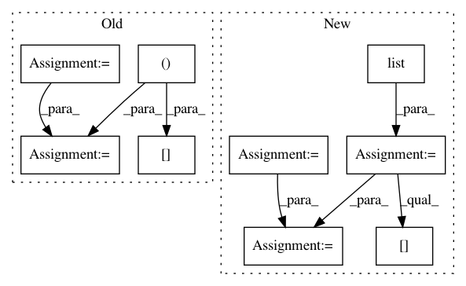

f9aea094643fb3240193b0bc0f1908d5b84d82ab,dask_image/ndmeasure/__init__.py,,center_of_mass,#Any#Any#Any#,24
Before Change
input_mtch_sum = sum(input, labels, index)
input_wt_mtch_sum = []
for i in _pycompat.irange(input.ndim):
sl = input.ndim * [None]
sl[i] = slice(None)
sl = tuple(sl)
input_i = dask.array.arange(input.shape[i], chunks=input.chunks[i])
input_wt = input * input_i[sl]
input_wt_mtch_sum.append(sum(input_wt, labels, index))
input_wt_mtch_sum = dask.array.stack(input_wt_mtch_sum, axis=-1)
com_lbl = input_wt_mtch_sum / input_mtch_sum[..., None]
return com_lbl
After Change
type_mapping = collections.OrderedDict([
(("%i" % i), input.dtype) for i in _pycompat.irange(input.ndim)
])
out_dtype = numpy.dtype(list(type_mapping.items()))
default_1d = numpy.full((1,), numpy.nan, dtype=out_dtype)
func = functools.partial(
_utils._center_of_mass, shape=input.shape, dtype=out_dtype
)
com_lbl = labeled_comprehension(
input, labels, index,
func, out_dtype, default_1d[0], pass_positions=True
)
com_lbl = dask.array.stack([com_lbl[k] for k in type_mapping], axis=-1)
In pattern: SUPERPATTERN
Frequency: 4
Non-data size: 9
Instances
Project Name: dask/dask-image
Commit Name: f9aea094643fb3240193b0bc0f1908d5b84d82ab
Time: 2018-09-30
Author: jakirkham@gmail.com
File Name: dask_image/ndmeasure/__init__.py
Class Name:
Method Name: center_of_mass
Project Name: dask/dask-image
Commit Name: c9fd2c425cb873508ba16221819574400ad2443e
Time: 2018-09-30
Author: jakirkham@gmail.com
File Name: dask_image/ndmeasure/__init__.py
Class Name:
Method Name: extrema
Project Name: analysiscenter/batchflow
Commit Name: 49f4e83ae4323e032bdd232e466e59b4aeceb458
Time: 2018-03-28
Author: g.ivanov@analysiscenter.ru
File Name: dataset/batch_image.py
Class Name: ImagesBatch
Method Name: _invert_
Project Name: analysiscenter/batchflow
Commit Name: d381fb0787395076ecb8a3bd6984f52a16793fae
Time: 2018-03-27
Author: g.ivanov@analysiscenter.ru
File Name: dataset/batch_image.py
Class Name: ImagesBatch
Method Name: _invert_